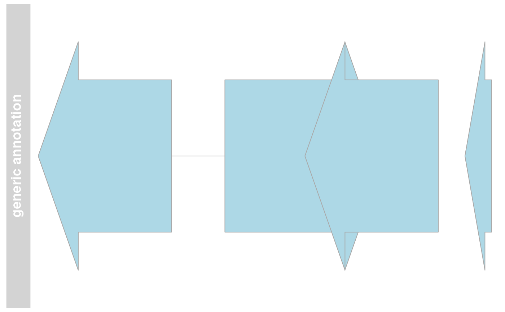

The virtual parent class for all track types in the Gviz package which contain potentially overlapping annotation items that have to be stacked when plotted.
# S4 method for class 'StackedTrack'
initialize(.Object, stacking, ...)
# S4 method for class 'StackedTrack'
stacking(GdObject)
# S4 method for class 'StackedTrack,character'
stacking(GdObject) <- value
# S4 method for class 'StackedTrack'
stacks(GdObject)
# S4 method for class 'StackedTrack'
setStacks(GdObject, ...)
# S4 method for class 'StackedTrack'
consolidateTrack(GdObject, ...)
# S4 method for class 'StackedTrack,ANY,ANY,ANY'
x[i, j, ..., drop = TRUE]
# S4 method for class 'StackedTrack'
subset(x, from = NULL, to = NULL, sort = FALSE, stacks = FALSE, ...)
# S4 method for class 'StackedTrack'
drawGD(GdObject, ...)Arguments
- .Object
The object skeleton passed on by
new()during class instantiation, to be filled in by theinitializemethod.- stacking
The stacking type for overlapping items of the track. One of
c(hide, dense, squish, pack, full). Currently, only squish (make best use of the available space), dense (no stacking, collapse overlapping ranges), and hide (do not show any track items at all) are implemented.- ...
Additional arguments.
- GdObject
Object of class
GdObject.- value
Value to be set.
- x
A valid track object class name, or the object itself, in which case the class is derived directly from it.
- i
Numeric scalar, index to subset.
- j
Numeric scalar, index to subset. Ignored.
- drop
logical, indicating if levels that do not occur should be dropped (iffis a factor).- from, to
Numeric scalar, giving the range of genomic coordinates to limit the tracks in. Note that
fromcannot be larger thanto.- sort
logical. Sort the track's ranges by their genomic coordinates after subsetting.- stacks
logical. Set if stacking should be preserved.
Value
A virtual Class: No objects may be created from it.
Functions
initialize(StackedTrack): Initialize thestackingslot (validating it against the allowedstackingValues) and reset thestacksslot, before deferring to theRangeTrackinitializer for the remaining slots.stacking(StackedTrack): return the current stacking type.stacking(GdObject = StackedTrack) <- value: set the object's stacking type to one inc(hide, dense, squish, pack, full).stacks(StackedTrack): return the stack indices for each track item.setStacks(StackedTrack): recompute the stacks based on the available space and on the object's track items and stacking settings.consolidateTrack(StackedTrack): ForStackedTrackobjects, set the stacking (which could have been passed in as a display parameter) before deferring to theRangeTrackmethod for the remaining consolidation steps.x = StackedTrack[i = ANY, j = ANY, drop = ANY]: subset the items in theStackedTrackobject. This is essentially similar to subsetting of theGRangesobject in the range slot. For most applications, the subset method may be more appropriate.subset(StackedTrack): subset aStackedTrackby coordinates and sort if necessary.drawGD(StackedTrack): plot the object to a graphics device. The return value of this method is the input object, potentially updated during the plotting operation. Internally, there are two modes in which the method can be called. Either in 'prepare' mode, in which case no plotting is done but the stacking information is updated based on the available space, or in 'plotting' mode, in which case the actual graphical output is created. Note that the method for this particular subclass is usually called through inheritance and not particularly useful on its own.
Slots
dpObject of class
DisplayPars, the display settings controlling the look and feel of a track. Seesettingsfor details on setting graphical parameters for tracks.nameObject of class
character, a human-readable name for the track that will be used in the track's annotation panel if necessary.imageMapObject of class
ImageMap, containing optional information for an HTML image map. This will be created by thedrawGDmethods when the track is plotted to a device and is usually not set by the user.rangeObject of class
GRanges, the genomic ranges of the track items as well as additional annotation information in itselementMetadataslot. Please note that the slot is actually implemented as a class union betweenGRangesandIRangesto increase efficiency, for instance forDataTrackobjects. This usually does not concern the user.chromosomeObject of class
character, the chromosome on which the track is defined. There can only be a single chromosome for one track. For certain subclasses, the space of allowed chromosome names is limited (e.g., only those chromosomes that exist for a particular genome). Throughout the package, chromosome names have to be entered either as a single integer scalar or as a character scalar of the formchrXYZ, whereXYZmay be an arbitrary character string.genomeObject of class
character, the genome for which the track is defined. For most sub-classes this has to be a valid UCSC genome identifier, however this may not always be formally checked upon object instantiation.stackingObject of class
character, the stacking type of overlapping items on the final plot. One ofc(hide, dense, squish, pack, full). Currently, onlyhide(do not show the track items at all),squish(make best use of the available space) anddense(no stacking at all) are implemented.stacksObject of class
numeric, holding the stack indices for each track item. This slot is usually populated by calling thesetStacksmethod upon plotting, since the correct stacking is a function of the available plotting space.
See also
Examples
## This is a reference class therefore we show below
## an example from AnnotationTrack
## An empty object
AnnotationTrack()
#> AnnotationTrack 'AnnotationTrack'
#> | genome: NA
#> | active chromosome: chrNA
#> | annotation features: 0
## Construct from individual arguments
st <- c(2000000, 2070000, 2100000, 2160000)
ed <- c(2050000, 2130000, 2150000, 2170000)
str <- c("-", "+", "-", "-")
gr <- c("Group1", "Group2", "Group1", "Group3")
annTrack <- AnnotationTrack(
start = st, end = ed, strand = str, chromosome = 7,
genome = "hg19", feature = "test", group = gr,
id = paste("annTrack item", 1:4),
name = "generic annotation", stacking = "squish"
)
## Plotting
plotTracks(annTrack)
 ## Stacking
stacking(annTrack)
#> [1] "squish"
stacking(annTrack) <- "dense"
plotTracks(annTrack)
## Stacking
stacking(annTrack)
#> [1] "squish"
stacking(annTrack) <- "dense"
plotTracks(annTrack)
